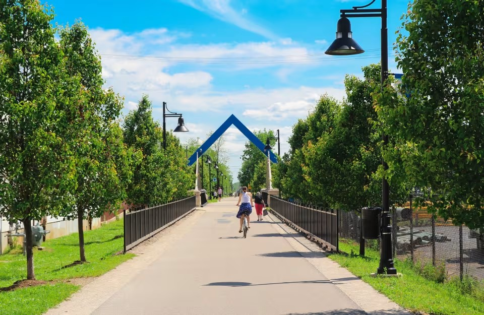
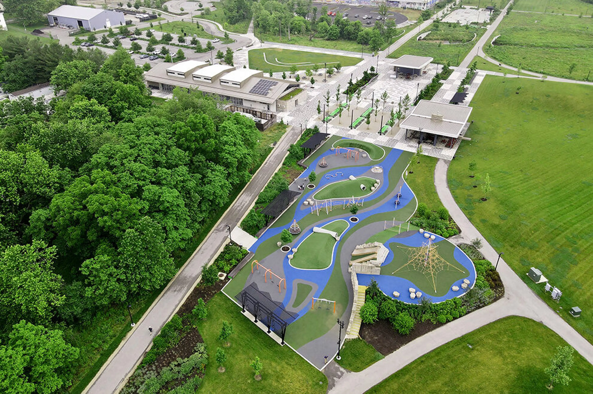
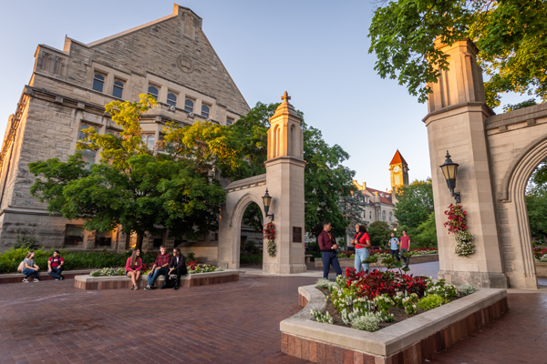

Downtown Bloomington

B-Line Trail

Switchyard Park
We know that choosing a lab means choosing a place to live. This guide is designed to help you make that decision with confidence — covering everything from stipends and housing costs to transit, healthcare, and what it actually feels like to live in Bloomington.
Bloomington is a vibrant college town with a strong sense of community, excellent amenities for its size, and a quality of life that regularly surprises newcomers. We think you'll love it here.
Have questions not covered here? Email us at yoonlab2026@gmail.com



Bloomington is an affordable city by U.S. standards. Graduate stipends and postdoc salaries at IU are designed to be livable — below is an honest breakdown of published benchmarks to help you plan.
PhD students at IU Bloomington typically receive a stipend in the range of $26,000–$32,000/year, depending on funding source and experience. Tuition is fully covered and health and dental insurance is included.
IU School of Medicine minimum: $61,008 (Feb 2026), increasing to $62,232 July 2026 (NIH NRSA year-0 scale). Confirm your specific unit's minimum directly with us.
The departmental minimums above are floors, not ceilings. When supported by faculty startup funds or grant budgets, the RPBS Lab is able to offer stipends and salaries above the standard rates for highly qualified candidates — with no university-imposed cap or special approval process required.
| Scenario | Rent | Groceries | Utilities | Est. Total |
|---|---|---|---|---|
| Single grad (shared) | ~$605–900 | ~$300–375 | ~$133 | ~$1,038–1,836 |
| Couple (no children) | ~$1,072–1,210 | ~$616 | ~$133 | ~$1,821+ |
| Family (2 adults + 2 kids) | ~$1,572+ | ~$1,000 | ~$133+ | ~$2,705+ |
Sources: HUD FY2026 FMR for Monroe County; USDA Thrifty Food Plan Jan 2026; EIA Indiana avg. electricity. Transit is free for IU affiliates. Health insurance varies by appointment type.
HUD Fair Market Rent benchmark for Monroe County. A practical baseline for planning.
Common for individual grad students or couples. Many options near campus in this range.
Shared with a roommate drops this to ~$605/person — very manageable on a stipend.
These are HUD Fair Market Rent benchmarks — a federal planning tool, not a guarantee of market prices. Actual listings vary. Start your search early, especially for August arrivals.
Bloomington has a range of housing options for graduate students and postdocs — from IU-managed apartments on campus to private rentals a short bus ride away. The key is starting early and knowing your options.
| Option | Best For | Link |
|---|---|---|
| IU Housing Apartments On-campus |
Bundled utilities + predictable billing; semester billing includes water/electric/internet/laundry | housing.indiana.edu ↗ |
| Campus View Apartments On-campus |
Families or students wanting apartment-style, unfurnished living | View ↗ |
| Tulip Tree Apartments On-campus |
Families; highlights campus access and family-friendliness | View ↗ |
| IU Real Estate Rentals Near-campus |
Grad/professional students and postdocs wanting private near-campus rentals | realestate.indiana.edu ↗ |
| Area | Why grads choose it |
|---|---|
| Walk/bike-to-campus core | Minimizes commute; maximizes library and seminar access. Higher demand. |
| Downtown core | Walkable dining, coffee, nightlife; public library access. Some weekend noise. |
| East-side retail corridor | Proximity to groceries and retail; newer units; good parking. Bus planning needed. |
| South-side (trail/park adjacent) | Great for families, runners, cyclists; near B-Line and Switchyard Park. |
| North-side (near hospital) | Convenient for medical collaboration; access to healthcare services. |
Off-campus resources: IU Off-Campus Living Guide ↗ · For lease review: IU Student Legal Services
Housing is often the biggest logistical challenge for international arrivals — deposits, SSN expectations, and lease timing can be tricky. Start with IU-managed options first (more predictable processes), then expand to private-market housing. For temporary lodging while you tour apartments, use IU's admissions visitor resources: admissions.indiana.edu ↗
Good news: you may not need a car. IU's campus bus system is free for all affiliates, and the city's bus network connects most residential areas to campus.
Campus buses provide free rides and are a key transport option. IU students, faculty, and staff ride Bloomington Transit without paying. Real-time tracking available.
A 3.1-mile multi-use corridor running from Adams Street to Country Club Drive, connecting neighborhoods to campus and downtown. Bloomington is very bikeable.
If you plan to drive, research IU Parking permits early — don't sign a lease assuming easy campus parking. Permit rates and availability are published on the IU Parking site.
| Airport | Code | Notes | Drive Time |
|---|---|---|---|
| Indianapolis International | IND | Recommended primary airport. Shuttle service with campus stops available. | ~1 hour |
| John Glenn Columbus | CMH | Alternative option; plan ground transport carefully. | ~1h 1m |
| Cincinnati/N. Kentucky | CVG | Alternative option; plan ground transport carefully. | ~2h 47m |
| Chicago O'Hare | ORD | Not recommended as primary arrival airport due to distance. | ~4h 34m |
IU's international office recommends a shuttle from Indianapolis with campus stops. Details: ois.iu.edu ↗
IU provides solid on-campus health resources. Understanding how they work before you arrive will save you time and stress.
The primary on-campus clinic. Publishes fee and insurance guidance. Spring 2026 health fee: $133.44/term.
Important: The Student Health Center is NOT affiliated with IU Health hospital system — the student health fee does not cover treatment at IU Health facilities.
Free counseling and mental health support. Publishes a 24/7 crisis line and after-hours options. IU also offers TimelyCare for free 24/7 mental health support.
For emergencies: call 911. IU Police (non-emergency): 812-855-4111. After-hours care referrals and crisis resources (including 988) are listed on the Student Health Center's after-hours page.
IU administers health insurance via Anthem in partnership with University Health Plans. For students on voluntary plans, the 2025–2026 academic-year premium is approximately $5,131/year.
Graduate student research/teaching appointments typically include health and dental insurance. Confirm your specific benefits package in writing when you receive your offer.
IU's Early Childhood Education Services operates three centers, serving children as young as six weeks, with fee assistance available for eligible full-time students.
Monroe County Community School Corporation (MCCSC) serves K-12 across ~23 schools in the Bloomington area.
The primary emergency and specialty care hospital serving the Bloomington area. Separate from IU's Student Health Center system.
Bloomington consistently surprises people with how much there is to do for a city of its size. It has a vibrant arts and food scene, excellent parks, and a strong sense of community built around the university.
Downtown Bloomington has a dense cluster of independent restaurants, coffee shops, and craft breweries. The Kirkwood Avenue area is the heart of it.
Switchyard Park is a 65-acre destination park in the heart of the city. The B-Line Trail connects neighborhoods. Lake Monroe is 20 minutes away for hiking and kayaking.
The Bloomington Community Farmers' Market runs seasonally and is a beloved local institution. IU is also home to the Jacobs School of Music — world-class performances are free or low-cost.
A major local resource offering community programs, events, and free access to books, media, and digital resources — great for families and lifelong learners.
Bloomington has four distinct seasons. Annual precipitation ~49 inches; snowfall ~17.5 inches. July avg. high ~85°F, January avg. high ~37°F. Autumn is particularly beautiful.
beINvolved is IU's hub for registered student organizations and events. IU also maintains a centralized research events calendar — a great way to connect beyond your department.
IU's Office of International Services (OIS) is your primary institutional authority for immigration and arrival logistics. Bookmark this office before anything else — especially if you encounter conflicting advice online.
IU's international office explicitly recommends Indianapolis International Airport — it's "just over an hour" from Bloomington. A shuttle service with campus stops is available. Avoid flying into Chicago (O'Hare) due to distance and limited onward options.
Most incoming PhD students arrive on F-1 (handled through the graduate school) and most new postdocs on J-1 — both straightforward and low-cost for the recruit. H-1B is less common and typically applies to seasoned postdocs or research scientists transitioning to longer-term roles. IU's visa process cannot begin until an offer letter is issued, so contact us early to avoid delays in your start date.
| Visa Type | Typical For | Processing Time | Fees |
|---|---|---|---|
| F-1 | PhD students | Via graduate school | No cost to recruit |
| J-1 | Postdocs, visiting scholars | 3–4 months (minimum) | ~$220–$380, paid by scholar |
| H-1B | Senior researchers / staff scientists | 6–7 months (minimum) | ~$3,480, covered by the lab |
For student orgs and graduate government, use beINvolved. For alumni networking, the IU Alumni Association maintains a searchable chapter directory. Many students also use Reddit communities (r/bloomington, r/IndianaUniversity) for informal local tips — but validate critical facts (leases, immigration, benefits) with official IU/city sources.
Use this checklist to stay ahead of the logistics. The biggest mistakes come from starting too late — especially on housing, immigration documents, and funding confirmation.
Don't hesitate to email Dr. Yoon directly. We're happy to answer questions about lab life, research expectations, onboarding timelines, and anything else that will help you make your decision.
Bookmark these official sources. They are more reliable than social media or informal advice — especially for immigration, housing, and health decisions.
| Category | Resource | Link |
|---|---|---|
| Graduate student support (housing, childcare, policies) | Graduate School Bloomington | graduate.indiana.edu ↗ |
| Immigration / visas / arrival planning | Office of International Services | ois.iu.edu ↗ |
| Student health clinic + health fee | Student Health Center | healthcenter.indiana.edu ↗ |
| Counseling & mental health | CAPS | healthcenter.indiana.edu/counseling ↗ |
| 24/7 mental health support | TimelyCare | iu.edu/mental-health ↗ |
| Research libraries + study spaces | Indiana University Libraries | libraries.indiana.edu ↗ |
| On-campus housing | IU Housing | housing.indiana.edu ↗ |
| Near-campus rentals | IU Real Estate | realestate.indiana.edu ↗ |
| Off-campus living guide | IU Student Life | studentlife.indiana.edu ↗ |
| Transit (free for IU affiliates) | Bloomington Transit | bloomingtontransit.com ↗ |
| Campus bus info | IU Transportation | bloomington.iu.edu ↗ |
| Parking permits | IU Parking | parking.indiana.edu ↗ |
| Campus map | IU Campus Maps | map.iu.edu ↗ |
| Emergency alerts | IU Notify | protect.iu.edu ↗ |
| City utilities (electricity, internet, etc.) | City of Bloomington Utilities | bloomington.in.gov ↗ |
| Career & internships | Handshake | iubloomington.joinhandshake.com ↗ |
| Student organizations & events | beINvolved | beinvolved.indiana.edu ↗ |
| Research events calendar | IU Research Events | research.iu.edu ↗ |
| Campus childcare | IU Early Childhood Education | childcare.indiana.edu ↗ |
| K-12 schools | Monroe County Community School Corp | mccsc.edu ↗ |
| Farmers market | Bloomington Farmers Market | bloomington.in.gov ↗ |
| Parks & trails | Switchyard Park | bloomington.in.gov ↗ |
| Public library | Monroe County Public Library | mcpl.info ↗ |
| Visiting / lodging | Visit Bloomington | visitbloomington.com ↗ |